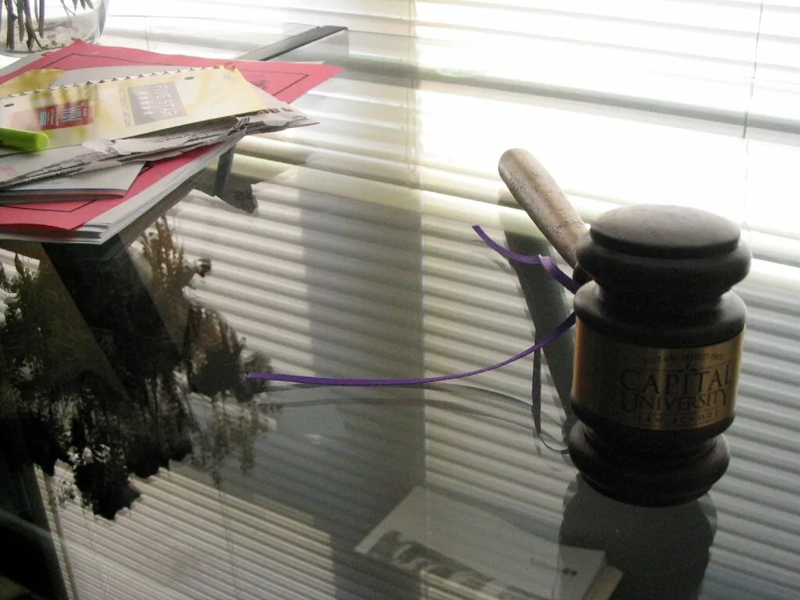
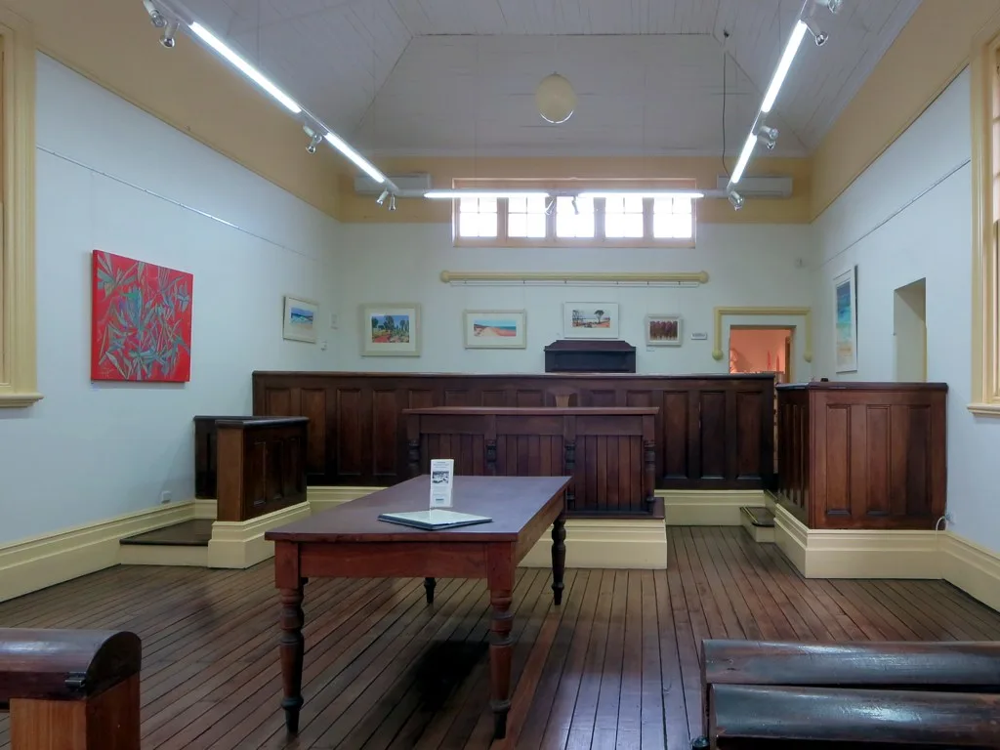

서울고법 형사2-1부(백승엽·황승태·김영현 고법판사)가 4일 오후 2시 윤석열 전 대통령의 공직선거법 위반 혐의 항소심 선고공판을 열었다. 법원은 이날 선고 장면을 TV와 유튜브 등을 통해 생중계하도록 허가해, 전직 대통령에 대한 선거법 2심 결과가 실시간으로 공개되는 드문 장면이 이뤄졌다. 이번 선고는 윤 전 대통령 관련 여러 재판 가운데서도 국민의힘의 선거비용 반환 여부를 직접 좌우한다는 점에서 법조계와 정치권의 관심이 동시에 집중됐다.
사건의 핵심은 윤 전 대통령이 국민의힘 대선 후보였던 2021년 12월 14일 관훈클럽 초청 토론회에서 한 발언이다. 그는 윤우진 전 용산세무서장에게 대검찰청 중앙수사부 출신 이모 변호사를 소개한 사실이 없다는 취지로 말했는데, 검찰은 이 발언이 허위사실 공표에 해당한다고 보고 그를 공직선거법 위반 혐의로 기소했다. 1심 재판부는 해당 발언을 유죄로 인정해 징역 1년 6개월에 집행유예 3년을 선고했다.

이 사건이 관심을 받는 또 다른 이유는 국민의힘의 선거비용 보전과 직결돼 있기 때문이다. 공직선거법에 따르면 선거범죄로 벌금 100만 원 이상의 형이 확정돼 당선이 무효가 되면, 해당 후보자를 추천한 정당은 국가로부터 보전받은 선거비용을 반환해야 한다. 1심 당선무효형이 2심에서도 유지되고 이후 대법원에서 그대로 확정될 경우, 국민의힘은 제20대 대선 당시 중앙선거관리위원회로부터 보전받은 선거비용 약 397억 원을 돌려줘야 하는 처지에 놓인다.
항소심 결심공판에서 특검팀은 1심과 동일한 형량을 선고해달라고 재판부에 요청한 것으로 전해졌다. 반면 윤 전 대통령 측 변호인단은 문제가 된 발언들을 허위사실로 볼 수 없다며 줄곧 무죄를 주장해왔다. 양측의 입장이 1심 때와 마찬가지로 평행선을 달린 가운데 항소심 재판부가 어느 쪽 주장을 받아들일지가 이날 선고의 관전 포인트로 꼽혔다.

이번 선거법 사건은 윤 전 대통령이 현재 진행 중인 다른 재판들과도 맞물려 있다. 그는 비슷한 시기 내란 혐의 관련 항소심에서도 변론이 마무리 단계에 들어간 것으로 알려지면서, 11월 들어 그를 둘러싼 복수의 재판이 동시에 분수령을 맞고 있다는 평가가 나온다. 선거법 사건의 결론이 다른 재판에 직접적인 법적 영향을 주는 것은 아니지만, 전직 대통령에 대한 사법적 평가가 연이어 나온다는 점에서 정치권 전반의 긴장도를 높이고 있다.
국민의힘 내부에서는 397억 원 반환 가능성에 대비해 당 재정에 미칠 영향을 주시하는 분위기다. 선거비용 반환이 실제로 확정될 경우 상당한 규모의 재정 부담이 불가피한 만큼, 당 차원에서도 항소심 결과를 예의주시해왔다. 법조계에서는 이번 선고가 향후 상고심으로 이어질 가능성이 큰 만큼, 어느 쪽이든 최종 결론까지는 다소 시간이 더 걸릴 수 있다는 전망도 함께 제기된다.
정치권에서는 이번 선고를 계기로 여야 간 공방이 다시 격화될 조짐도 감지된다. 여당과 야당 모두 재판 결과를 각자의 정치적 메시지로 활용할 가능성이 큰 만큼, 선고 이후 나올 양측의 공식 반응과 후속 대응에도 관심이 모인다. 법원 선고가 정치적 셈법과 뒤섞이는 가운데, 이번 사건이 향후 재판 절차를 거쳐 어떤 식으로 최종 마무리될지 주목된다.